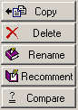
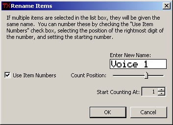
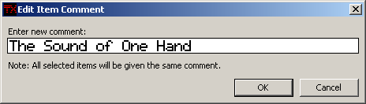
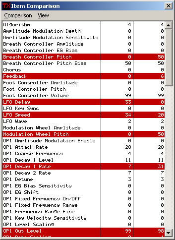

The library buttons allow you to manipulate the contents of libraries.
Where the copied items end up in the destination library's list box depends
on what sort is activated. It will place the items in sorted order.
If you have the Disallow
Duplicates In Libraries option selected in the main menu, then any
duplicates you try to copy will not copy over, but the items that were
duplicated are selected in the destination list after the copy.
Deletes the selected items from the library.
This will bring up the Rename dialog to allow you to rename all of the
selected items.

All of the selected items will be given the name you enter in the Enter New
Name: field. You can make these unique by checking the Use Item
umbers option (this will be disabled if only one item is selected).
Checking this will enable the count controls. The Start Counting At
field lets you set the starting number to being counting. The Count
Position slider lets you place the rightmost digit of the number. The
counting begins with the top item in the selection and is incremented by
one for each item going down.
Item names are limited to 10 characters. This is the same limit as it is
on the TX81Z.
This brings up the Edit Item Comment box so you can enter a new
comment.

All the selected items will be given the same comment. Comments
are limited to 40 characters.
This button allows you to compare the parameters of two items. It will bring
up the Item Comparison window, which lists each parameter and the values
of the two items. The top item of the selection is on the left, and the bottom
one is on the right. Differences between the items are highlighted in red, or
whatever the current highlight color
is.

You can configure the list to show only items that are different, only
items that are the same, or all items in the View menu of the
Item Comparison window.
There are a few limitations with this function:
The Compare button in the main window will be disabled if these
conditions are not met.
Copy
The copy button will copy the selected items to the other library. You can
only have selected items in one library at a time, and the icon on the copy
button will point to the other library, so it should be pretty obvious what
will happen when you click the copy button.
Note
Items that have different names but have all the same parameter settings are
considered duplicates in this context.
Delete
Rename
Note
When you rename items, the library will be resorted if you have it sorted by
name.
Recomment
Note
When you recomment items, the library will be resorted if you have it sorted
by comment.
Compare